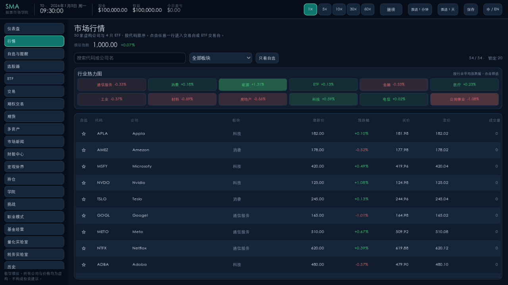
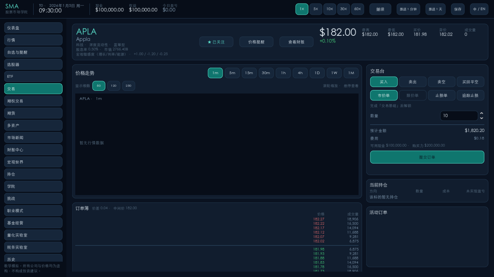
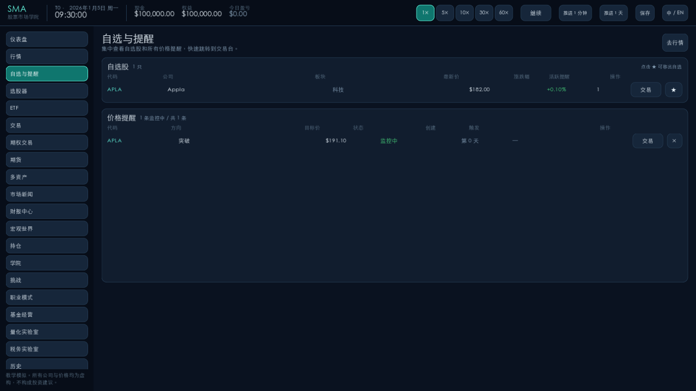
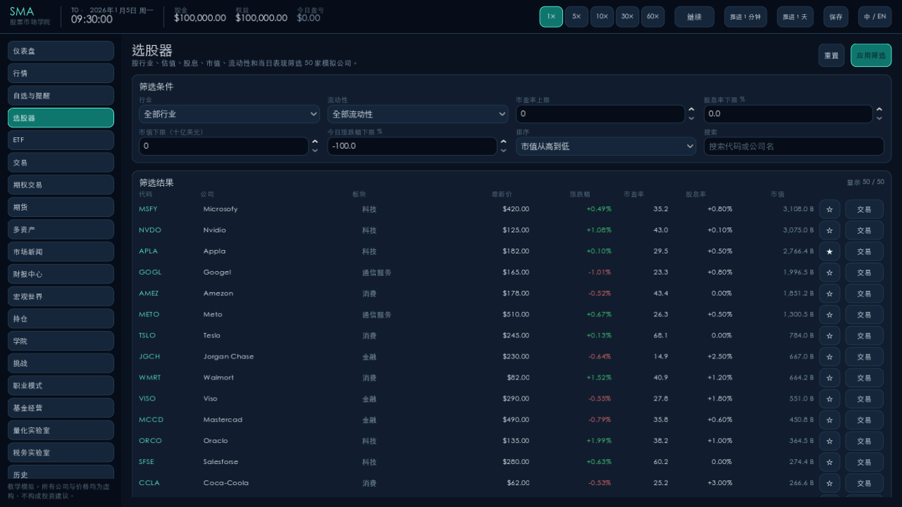
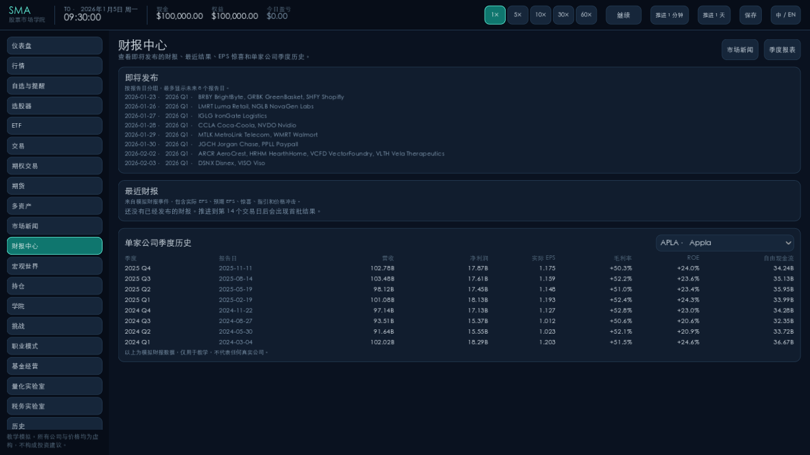

Stock Market Academy
beta-01 版本更新测试报告
本报告覆盖自选与提醒中心、选股器、财报中心、行业热力图、剧情头像与剧情修复， 以及中英文文档和 Windows 构建。测试范围包括 32 个单元测试套件、1 个端到端集成场景、 全量截图检查和最终导出验证。
1. 执行摘要
beta-01 版本通过全部自动化测试与构建验证，未发现阻塞发布的缺陷。 本轮新增的四个功能面均已接入现有存档、信号和导航体系，并在 1280×720 最小窗口下完成截图检查。
测试结论
- 单元测试：32 个套件，30,072 项检查全部通过。
- 集成测试：真实主场景端到端运行，覆盖 28 个页面与 169 个检查点。
- UI 验证：1280×720 最小分辨率下市场、交易、自选、选股器、财报中心布局正常。
- 构建验证：Windows 导出成功，产物约 122 MB。
- 发布验证：提交
11fdc33已推送至origin/main。
发布建议
发布后建议继续观察：ETF 日切提醒的触发时机、长时间快进下的提醒性能， 以及新增页面在 2560×1600 高分辨率下的视觉密度。
2. 版本变更范围
本次测试覆盖以下新增与修改内容：
| 类别 | 内容 | 测试关注点 |
|---|---|---|
| 自选与提醒中心 | 新增独立页面，汇总自选股、活跃提醒、已触发提醒；支持跳转、删除和批量清理。 | 状态同步、空列表、保存/重载、删除。 |
| 价格提醒 | 突破/跌破目标价、10 秒检查、单次触发、200 条上限、存档兼容。 | 等值触发、重复触发、旧存档、提示合并。 |
| 选股器 | 行业、流动性、P/E、股息率、市值、当日涨跌、搜索和排序；筛选条件持久化。 | 过滤收窄、重置、设置存档。 |
| 财报中心 | 未来报告日、最近结果、EPS 惊喜、指引、价格冲击、单家公司 8 季度历史。 | 页面渲染、公司切换、空状态。 |
| 行业热力图 | 11 个股票行业 + ETF 平均涨跌幅，点击筛选行业。 | 渲染数量、点击联动、颜色和布局。 |
| 剧情与角色 | 16 段剧情、36 条触发器、7 位角色、半身头像与剧情逻辑修复。 | 头像解析、分支旗标、结局条件、回归。 |
| 发布文档 | 中文/英文 README、截图、CHANGELOG、MIT LICENSE。 | 信息完整性、链接、许可证。 |
3. 测试环境与策略
环境
| 操作系统 | macOS · Apple M2 |
| 引擎 | Godot 4.7.2 stable（official） |
| 渲染 | GL Compatibility · Metal 4.1 |
| 基准分辨率 | 1440×900 逻辑布局 |
| 最小窗口 | 1280×720 |
| 测试模式 | Headless 单元/集成 + 真实渲染截图 |
| 存档 | 独立测试存档，测试后清理 |
测试策略
30,072 checks
28 pages
全页面/主题/语言
122 MB
origin/main
单元测试验证纯逻辑与边界条件；集成测试验证真实信号、UI 与存档链路； 截图检查验证最小分辨率布局；最后执行导出和 Git 推送。
4. 测试结果总览
| 测试层 | 范围 | 结果 |
|---|---|---|
| 单元测试 | 32 个套件 / 30,072 项检查 | 通过 |
| 集成测试 | 1 个端到端场景 / 28 个页面 / 169 个检查点 | 通过 |
| UI 截图 | 1280×720，重点页面 + 全量页面/主题/语言 | 通过 |
| Windows 导出 | StockMarketAcademy_beta-01.exe | 通过 |
| Git 发布 | commit 11fdc33 → origin/main | 通过 |
5. 单元测试明细
单元测试使用项目自带的无第三方依赖测试框架，入口为
tests/run_tests.gd。32 个套件覆盖纯逻辑、存档、文案、
分辨率适配和压力场景。
| 领域 | 覆盖内容 | 检查数 | 结果 |
|---|---|---|---|
| 国际化 | 中英文键集合、缺失回退、全部文案一致性 | 12,336 | 通过 |
| 显示适配 | 分辨率预设、窗口模式、UI 缩放、尺寸边界 | 9,539 | 通过 |
| 压力测试 | 长时间推进、批量订单、极端行情、性能边界 | 6,370 | 通过 |
| 学院/目录 | 38 个单元、XP、测验、成就、50 家公司目录 | 729 | 通过 |
| 市场/交易 | 交易所、盘口、期权、期货、ETF、多资产、财报 | 582 | 通过 |
| 历史/复盘 | 历史场景、回放、复盘、指标、行业、主题、存档 | 209 | 通过 |
| 职业/基金 | 职业等级、基金、量化、税务、挑战、优化器 | 154 | 通过 |
| 剧情/提醒 | 16 段剧情、36 条触发器、自选与价格提醒 | 153 | 通过 |
完整的 32 个套件清单见附录 B。
6. 集成测试明细
集成测试启动真实主场景，连接自动加载、信号、UI 页面、交易所和存档服务， 并模拟从开场剧情到完整发布流程的端到端操作。
覆盖范围
- 开场剧情、第一笔交易、剧情头像与分支。
- 行情、交易、期权、期货、多资产、ETF。
- 学院、挑战、职业、基金、量化、税务。
- 历史实验室、回放、季度报表、词典。
- 沙盒、设置、主题、语言、分辨率。
- 自选、价格提醒、提醒中心、选股器、财报中心、行业热力图。
- 保存/重载、旧存档兼容、导出与沙盒恢复。
关键结果
INTEGRATION OK equity=99913.39 day=1 stories=16- 28 个页面全部注册并可渲染。
- 169 个检查点全部通过。
- 自选/提醒/筛选条件在保存后恢复。
- 沙盒退出后职业存档恢复。
- 导入/导出存档格式正确。
7. 新功能专项用例
| ID | 模块 | 测试内容 | 预期 | 结果 |
|---|---|---|---|---|
| WL-01 | 自选股 | 点击行情页星标加入/移除自选 | 状态正确切换，不触发行跳转 | 通过 |
| WL-02 | 自选股 | 开启“只看自选” | 只显示已关注标的 | 通过 |
| WL-03 | 提醒中心 | 自选页渲染关注标的与提醒列表 | 行、按钮和状态完整 | 通过 |
| AL-01 | 价格提醒 | 弹窗内添加突破提醒 | 提醒写入并显示 | 通过 |
| AL-02 | 价格提醒 | 弹窗内添加跌破提醒并删除 | 列表数量正确回退 | 通过 |
| AL-03 | 价格提醒 | 最新价等于突破目标价 | 触发并标记已触发 | 通过 |
| AL-04 | 价格提醒 | 最新价等于跌破目标价 | 触发并标记已触发 | 通过 |
| AL-05 | 价格提醒 | 已触发提醒再次检查 | 不重复触发 | 通过 |
| AL-06 | 价格提醒 | 清除全部已触发提醒 | 已触发被删除，活跃保留 | 通过 |
| AL-07 | 价格提醒 | 达到 200 条上限后继续添加 | 返回 limitReached | 通过 |
| AL-08 | 存档 | 旧存档缺少 alerts 字段 | 按空列表兼容 | 通过 |
| AL-09 | 存档 | 保存/重载自选与提醒 | 状态完整恢复 | 通过 |
| SC-01 | 选股器 | 初始渲染 50 家公司 | 行数与目录一致 | 通过 |
| SC-02 | 选股器 | 设置 P/E 上限并应用 | 结果收窄 | 通过 |
| SC-03 | 选股器 | 重置筛选 | 恢复全部结果 | 通过 |
| SC-04 | 选股器 | 筛选条件写入 settings | 保存后可恢复 | 通过 |
| EC-01 | 财报中心 | 页面与公司选择器渲染 | 选择器非空，历史表可见 | 通过 |
| EC-02 | 财报中心 | 切换公司 | 选择保留并刷新历史 | 通过 |
| HM-01 | 热力图 | 行情页渲染行业卡片 | 至少 12 个行业 + ETF 卡片 | 通过 |
| HM-02 | 热力图 | 点击行业卡片 | 行情页行业筛选同步 | 通过 |
| UI-01 | 布局 | 1280×720 下五个重点页面 | 无裁切、重叠或横向溢出 | 通过 |
8. 缺陷与修复记录
测试周期内发现的问题均已修复并重新验证，当前没有未解决缺陷。
| ID | 严重度 | 模块 | 问题与修复 | 状态 |
|---|---|---|---|---|
| BUG-01 | 中 | 价格提醒 | 提醒弹窗打开期间后台触发，列表状态不刷新。已接入 state_changed("alerts") 实时刷新列表和现价。 | 已修复 |
| BUG-02 | 中 | 价格提醒 | 旧存档提醒缺少 ID 时可能与既有 ID 冲突。归一化阶段提前读取序号并保证 ID 唯一。 | 已修复 |
| BUG-03 | 低 | 价格提醒 | 已触发提醒可能重复提示或无法批量清理。新增单次触发标记与 remove_triggered。 | 已修复 |
| BUG-04 | 低 | 提醒中心 | 无提醒时列表区域留白过大。提醒列表高度改为按数量自适应（80–300px）。 | 已修复 |
| BUG-05 | 低 | 布局 | 新增按钮和列在 1280×720 下可能挤压。重排报价头部与市场表格，并完成最小分辨率截图验证。 | 已修复 |
| BUG-06 | 高 | 剧情 | 角色前史、压力测试与真实危机混用、低信任分支缺失、交易声明与账户不一致等逻辑问题。已统一设定并补充分支。 | 已修复 |
| BUG-07 | 中 | 剧情 | 角色头像与说话人解析不一致。已补充角色目录、别名和头像解析测试。 | 已修复 |
| BUG-08 | 低 | 文档 | README 只有标题，缺少玩法、操作、存档、测试和导出说明。已补齐中英文文档、截图、CHANGELOG 和许可证。 | 已修复 |
9. UI 与分辨率验证
在 1280×720 最小窗口下检查新增页面和改动页面的布局。 重点确认按钮、表格列、筛选控件和热力图没有被裁切或重叠。





完整截图脚本还覆盖深色/浅色主题、中英文界面和全量页面；本次重点页面均通过 1280×720 检查。
10. 构建与发布验证
Windows 构建
- 预设：
Windows Desktop - 产物：
build/windows/StockMarketAcademy_beta-01.exe - 大小：约 122 MB
- 导出命令：
--export-release build/已在.gitignore中排除。
Git 发布
- 提交：
11fdc33 - 分支：
main - 远程：
origin/main - 工作区：干净
- 提交内容：61 个文件，4,846 行新增，206 行删除。
godot --headless --path . --script res://tests/run_tests.gd
godot --headless --path . res://tests/integration.tscn
SMA_SHOT_DIR=/tmp/sma_shots godot --path . res://tests/screenshot.tscn
godot --headless --path . --export-release "Windows Desktop" build/windows/StockMarketAcademy_beta-01.exe11. 风险与限制
| 风险 / 限制 | 说明 | 等级 | 处理 |
|---|---|---|---|
| ETF 提醒在日切触发 | ETF 盘中 last 不逐秒重估，提醒只会在收盘检查时触发。 | 低 | 已记录 |
| 提醒检查间隔 | 每 10 个模拟秒检查一次，极端快进下可能错过 10 秒内的短暂穿越。 | 低 | 设计范围 |
| 无实时行情 | 所有行情为确定性模拟；历史实验室使用离线真实日线。 | 低 | 产品边界 |
| 本地单槽存档 | 没有云存档；磁盘损坏或误删可能丢失进度。 | 低 | 支持导出 |
| 税务范围 | 仅覆盖英国 2026/27 教学估算，不构成税务建议。 | 低 | 产品边界 |
| 无真实交易 | 不连接券商、不执行真实订单、不涉及真实资金。 | 无 | 设计目标 |
12. 发布结论
本轮版本更新已完成功能开发、自动化测试、最小分辨率 UI 检查、Windows 构建和 Git 发布。 30,072 项单元检查、169 个集成检查点和 28 个页面全部通过，未发现阻塞缺陷。
建议按当前 beta-01 版本发布，并在后续版本继续观察 ETF 提醒时机、
长时间快进性能和更多分辨率下的布局表现。
附录 A · 测试命令
# 全量单元测试
godot --headless --path . --script res://tests/run_tests.gd
# 集成测试
godot --headless --path . res://tests/integration.tscn
# 1280×720 截图检查
SMA_SHOT_DIR=/tmp/sma_shots SMA_KEEP_WINDOW=1 \
godot --path . --resolution 1280x720 res://tests/screenshot.tscn
# Windows 导出
godot --headless --path . --export-release "Windows Desktop" \
build/windows/StockMarketAcademy_beta-01.exe附录 B · 32 个单元测试套件
| 套件 | 检查数 | 结果 | 领域 |
|---|---|---|---|
test_i18n.gd | 12,336 | 通过 | 国际化与文案 |
test_display.gd | 9,539 | 通过 | 分辨率与显示 |
test_stress.gd | 6,370 | 通过 | 压力与稳定性 |
test_catalog.gd | 407 | 通过 | 公司目录 |
test_academy.gd | 322 | 通过 | 学院 |
test_earnings.gd | 175 | 通过 | 财报 |
test_options.gd | 124 | 通过 | 期权 |
test_exchange.gd | 106 | 通过 | 交易所 |
test_narrative.gd | 97 | 通过 | 剧情 |
test_history.gd | 59 | 通过 | 历史 |
test_alerts.gd | 56 | 通过 | 自选与提醒 |
test_multiasset.gd | 44 | 通过 | 多资产 |
test_futures.gd | 42 | 通过 | 期货 |
test_fund.gd | 37 | 通过 | 基金 |
test_market_intel.gd | 31 | 通过 | 市场情报 |
test_etf.gd | 30 | 通过 | ETF |
test_quant.gd | 28 | 通过 | 量化 |
test_challenges.gd | 27 | 通过 | 挑战 |
test_career.gd | 25 | 通过 | 职业 |
test_corporate.gd | 25 | 通过 | 公司行动 |
test_tax.gd | 23 | 通过 | 税务 |
test_calendar.gd | 21 | 通过 | 日历 |
test_fundamentals.gd | 20 | 通过 | 基本面 |
test_review.gd | 19 | 通过 | 复盘 |
test_rng.gd | 16 | 通过 | 随机数 |
test_order_book.gd | 16 | 通过 | 盘口 |
test_save.gd | 16 | 通过 | 存档 |
test_replay.gd | 16 | 通过 | 回放 |
test_optimizer.gd | 14 | 通过 | 优化器 |
test_indicators.gd | 14 | 通过 | 技术指标 |
test_theme.gd | 11 | 通过 | 主题 |
test_industry.gd | 6 | 通过 | 行业 |
合计：30,072 项检查，0 失败。